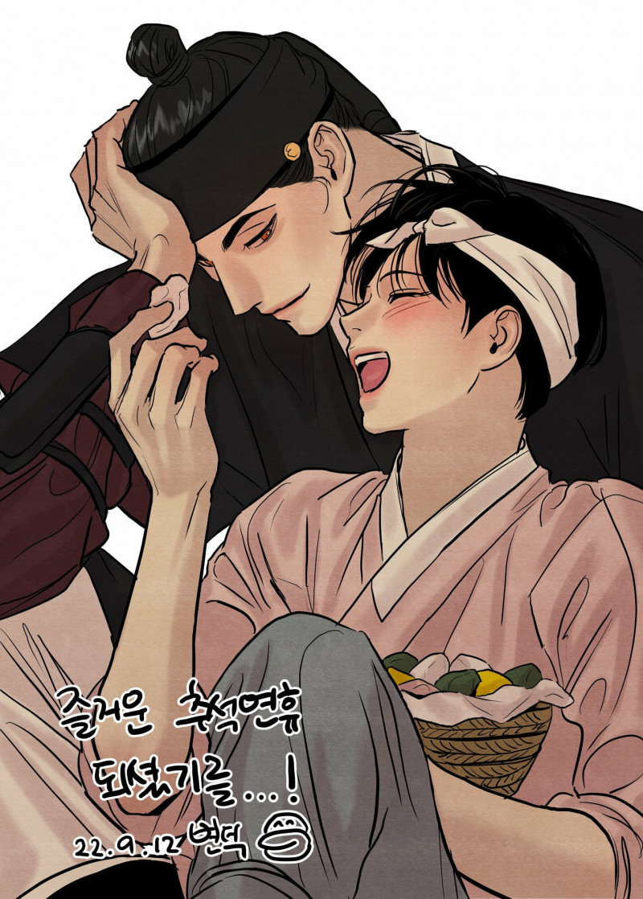
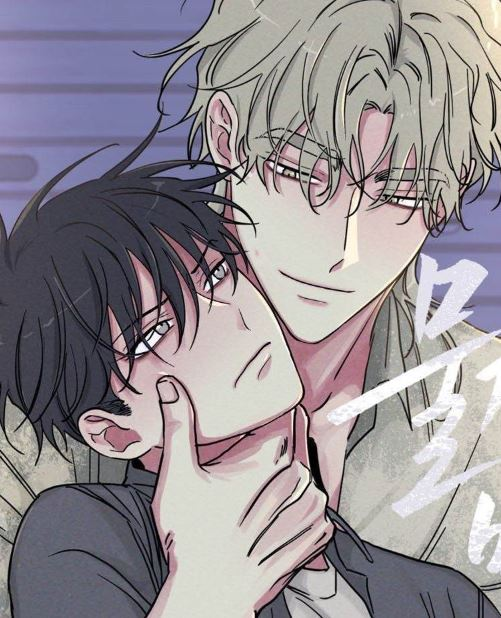
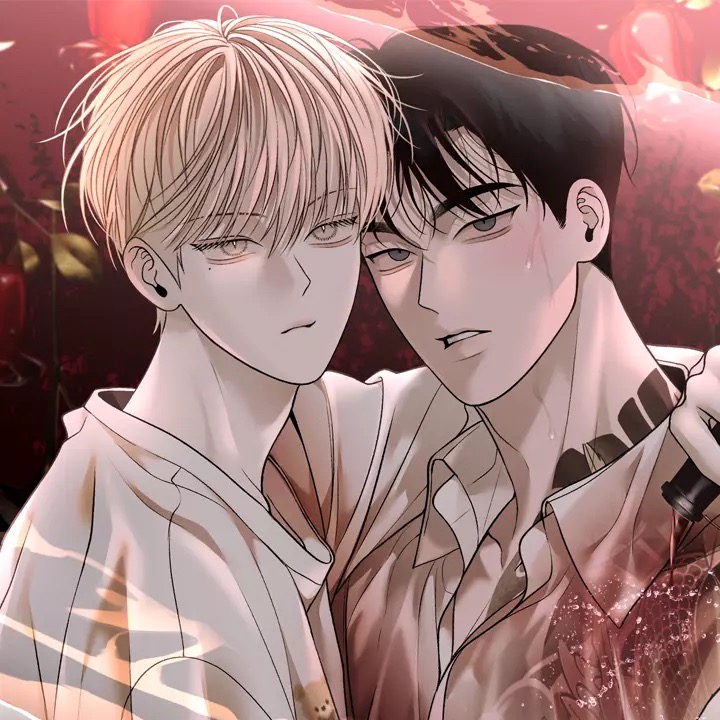
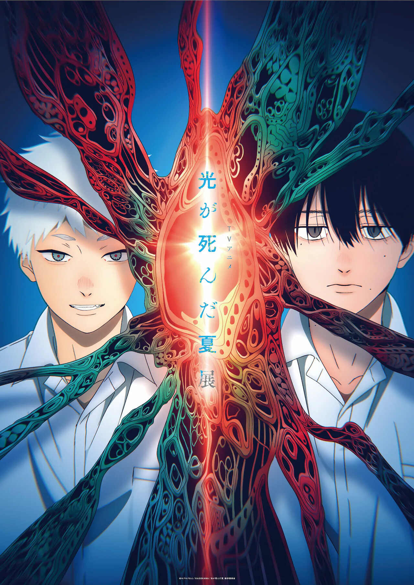
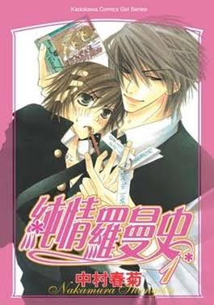
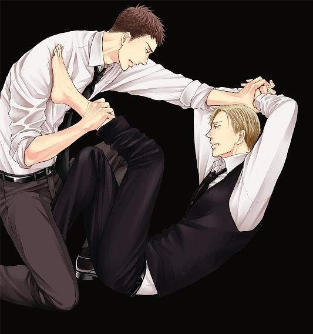
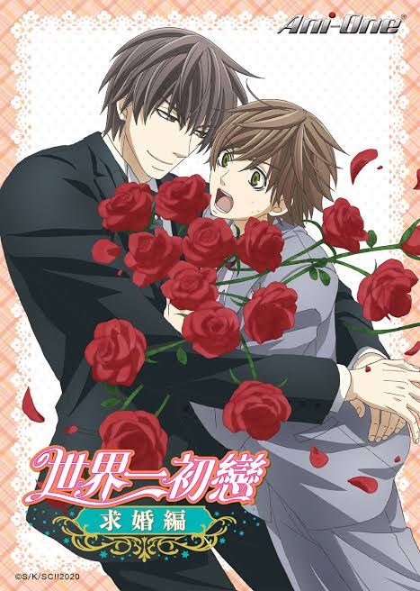
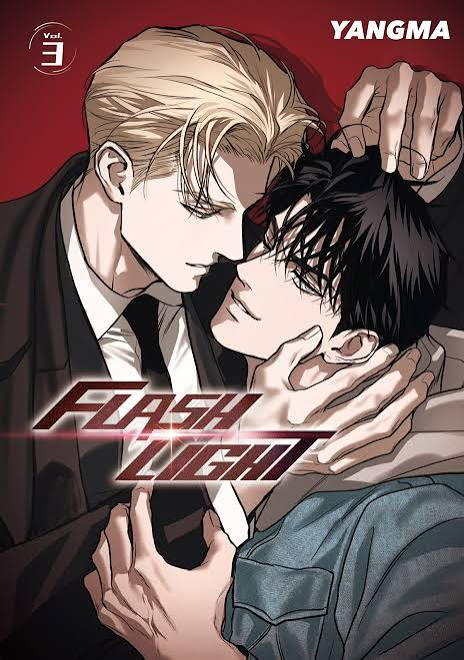
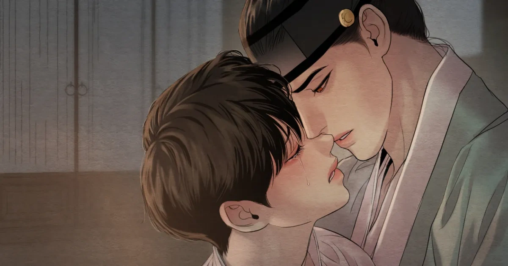

已完結夜畫帳
畫師以筆入局，在權貴世界中描繪難以言說的情意。
READERS' FAVORITES

已完結畫師以筆入局，在權貴世界中描繪難以言說的情意。

話題新作在交錯的心意與命運裡，兩人一步步走近彼此。

人氣連載在危險與牽引交錯之間，展開一段難以抽身的情感故事。

本週完結熟悉的摯友回來了，但他身上似乎藏著不尋常的祕密。

經典推薦戀愛新手與人氣小說家，展開不按牌理出牌的相處日常。

人氣推薦在沉默與過往之間，兩人維持著危險又難以割捨的距離。

經典推薦出版社編輯部裡，舊日緣分與全新的戀情再次交會。

新作推薦光影交錯的相遇，逐漸照亮彼此藏在心底的情意。
FIND YOUR MOOD
A LITTLE SNEAK PEEK
《夜畫帳》精選插畫 · 第 1 頁
《夜畫帳》｜在筆墨之間，藏著難以言說的情意。

01 「有些心意，A NOTE FROM BLKOI